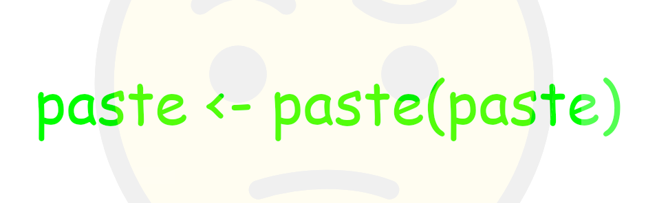

data[data$column == 1, ]Error in data$column: object of type 'closure' is not subsettableAugust 19, 2023

I wrote an R function to help identify variable names that already exist as function names, like in c <- 1 or head <- "x".
Naming things is hard, yes, but data is a short and sensible choice for a dataframe, right?
Oh, silly me, I tried to subset a dataframe called data without actually, y’know, creating it first.
This is a classic stumbling block in R. In short, there’s already a function in base R called data and so ended up trying subset it. But you can’t subset a function, hence the error.
Here’s what happens if you subset a non-existent object that has a name that’s different to any existing functions:
‘Object not found’ is a much more helpful error message.
So it’s not a big deal, but using existing function names as variable names is a code smell. Especially if they’re frequently used functions from base R like head, str, paste, etc1.
But R doesn’t stop you from using these names. In general, R is pretty loose with variable naming, though you can’t use a small set of reserved words like TRUE, if or NA.
For example, here we can call the c() function to see its (very short) definition. But using it as a variable name obscures the function definition.
function (...) .Primitive("c")[1] 1Can we write a generic function to identify if some code contains ‘bad’ variable names in this way?
Of course. I’ve made a function called find_var_names(). I’m certain the functionality already exists; consider this a thought experiment.
You provide (a) a string of code to evaluate2 and (b) a vector of names to avoid. The code is parsed with getparsedata(parse()) to identify variable names3. It checks for a SYMBOL token followed by the assignment operators <- or =4, or preceded by an assignment operator in the case of ->5 (i.e. *_ASSIGN tokens). These variable names are then compared to the set of names provided.
find_var_names <- function(code_string, names_to_find) {
# Parse the string of code to identify R 'tokens'
parsed <- getParseData(parse(text = code_string, keep.source = TRUE))
parsed <- parsed[parsed$text != "", ]
# Identify subsequent tokens (to help find 'x' in x <- 1 and x = 1)
parsed$next_token <-
c(parsed$token[2:nrow(parsed)], NA_character_)
# Identify prior token (to help find 'x' in 1 -> x)
parsed$last_token <-
c(NA_character_, parsed$token[1:nrow(parsed) - 1])
# Identify variable names with left-assignment
lassign <-
parsed[parsed$token == "SYMBOL" & grepl("ASSIGN", parsed$next_token), ]
# Identify row index for variable names following right-assignment
rassign_i <-
which(parsed$token == "RIGHT_ASSIGN" & parsed$next_token == "SYMBOL") + 1
# Filter for right-assigned variable names
rassign <- parsed[rassign_i, ]
# Combine the results and sort by location
var_names <- rbind(lassign, rassign)
var_names <- var_names[sort(row.names(var_names)), ]
# Filter for variable names that are in the provided names list
var_names[var_names$text %in% names_to_find, !grepl("_token", names(var_names))]
}So, let’s say we have this snippet of R code6 below. It uses some variable names that are already function names, as well as each flavour of assignment.
And here’s a function that grabs the base packages and the function names within. This is what we’ll use as our ‘no-go’ variable names. You could expand this to include other names, like function names from the tidyverse, for example.
get_base_functions <- function() {
base_names <- sessionInfo()$basePkgs
base_pkgs <- paste0("package:", base_names)
lapply(base_pkgs, ls) |> unlist() |> unique() |> sort()
}
tail(get_base_functions())[1] "xyTable" "xyz.coords" "xzfile" "yinch" "zapsmall"
[6] "zip" Aside: this function uses a little hack. It specificaloy grabs the attached base packages from the sessionInfo() listing. There are other base and ‘recommended’ packages that are actually not attached from the start of your session; see the Priority value from the output of installed.packages().
Now we can run the function to check the code for the list of function names.
naughty_words <- find_var_names(
code_string = demo_code,
names_to_find = get_base_functions()
)
naughty_words line1 col1 line2 col2 id parent token terminal text
1 1 1 1 4 1 3 SYMBOL TRUE data
10 2 1 2 4 10 12 SYMBOL TRUE head
31 3 8 3 9 31 33 SYMBOL TRUE df
64 5 11 5 11 64 66 SYMBOL TRUE cThe output is what you normally get from getparsedata(parse()), filtered for the illegal names. Helpfully it shows you the exact row and column indices for where the string exists in the code you provided.
And of course you can just isolate the offenders.
I probably won’t use this function in real life, but maybe the concepts are interesting to you or you can tell me about a linter that does this already.
At least for now, object of type ‘Matthew’ is not upsettable.
Last rendered: 2023-08-19 22:17:52 BSTR version 4.3.1 (2023-06-16)
Platform: aarch64-apple-darwin20 (64-bit)
Running under: macOS Ventura 13.2.1
Matrix products: default
BLAS: /Library/Frameworks/R.framework/Versions/4.3-arm64/Resources/lib/libRblas.0.dylib
LAPACK: /Library/Frameworks/R.framework/Versions/4.3-arm64/Resources/lib/libRlapack.dylib; LAPACK version 3.11.0
locale:
[1] en_US.UTF-8/en_US.UTF-8/en_US.UTF-8/C/en_US.UTF-8/en_US.UTF-8
time zone: Europe/London
tzcode source: internal
attached base packages:
[1] stats graphics grDevices utils datasets methods base
loaded via a namespace (and not attached):
[1] htmlwidgets_1.6.2 compiler_4.3.1 fastmap_1.1.1 cli_3.6.1
[5] tools_4.3.1 htmltools_0.5.5 rstudioapi_0.15.0 yaml_2.3.7
[9] rmarkdown_2.23 knitr_1.43.1 jsonlite_1.8.7 xfun_0.39
[13] digest_0.6.33 rlang_1.1.1 evaluate_0.21